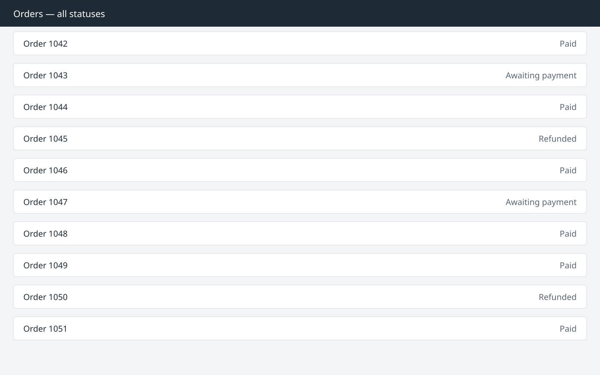
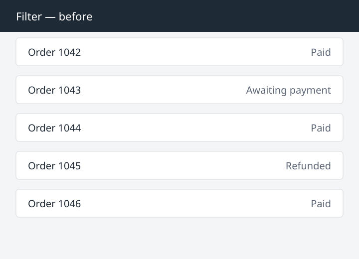
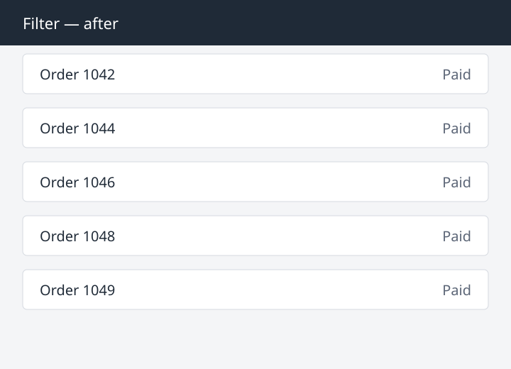

Orders created before the March migration never received a payment status, so a status filter hides them unless it has an «unknown» option.
| Created | Orders | With status |
|---|---|---|
| before 2026-03 | 156 | 0 |
| 2026-03 and later | 89 | 89 |
Orders can be filtered by payment status · branch feat/order-filter · 2026-10-08
Model: an order list gains a payment-status filter; the filter is a query parameter, so a filtered view can be shared as a link. The status is stored as an append-only history.

console/orders/list.tsx

Orders created before the March migration never received a payment status, so a status filter hides them unless it has an «unknown» option.
| Created | Orders | With status |
|---|---|---|
| before 2026-03 | 156 | 0 |
| 2026-03 and later | 89 | 89 |
The brief treats a refund as a status; the contract keeps it as a separate entity, so «Refunded» needs a join, not a field.
A filter in the URL makes a filtered list a link that a teammate can open.
A filter never hides an order the user cannot otherwise reach: «unknown» is always an option.
The user opens Orders and sees every order, newest first.
A status menu above the list narrows it; the URL gains ?status=paid.
flowchart LR
menu["`**Menu**
status = paid`"] --> url["`**URL**
/orders?status=paid`"] --> query["`**Query**
listOrders({ status: 'paid' })`"]
flowchart TD list[Order list] -->|pick a status| filtered[Filtered list] filtered -->|copy link| shared[Teammate opens the link] filtered -->|clear| list
sequenceDiagram participant U as User participant P as Page participant A as API U->>P: pick "paid" P->>A: listOrders(status=paid) A-->>P: 3 orders P-->>U: filtered list
stateDiagram-v2 [*] --> All All --> Filtered: pick a status Filtered --> All: clear Filtered --> [*]
listOrders API: Additive@@ commands/listOrders.ts @@
input: z.object({
- paidOnly: z.boolean().optional(),
+ status: z.enum(["paid", "awaiting", "unknown"]).optional(),
}),// The one place that turns the address into a status.
export const statusFromUrl = (params: URLSearchParams): Status | undefined =>
STATUSES.find((status) => status === params.get("status"));bun run contracts:diff origin/main HEAD --contract api| Spec section | Shipped | Class |
|---|---|---|
| Filter menu | as specified | matches |
| «Unknown» option | hidden when every order has a status | intentional refinement, decided by the product owner |
| Count per status | not shown: the count query takes 2 s on 10⁵ orders | implementation constraint |
| Date | Feedback | Classification | Change |
|---|---|---|---|
| 2026-10-07 | Keep old orders reachable | missing prior | «Unknown» option; prior added to orders/README.md |
| 2026-10-08 | Name the menu «Payment» | under-specified | Label changed |